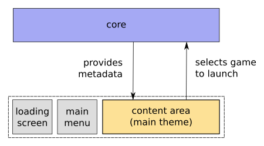
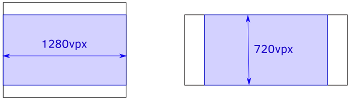

Theme guide
Overview
Pegasus consists of two layers: the core which looks for your games and metadata, and the user interface (UI), where the data provided by the core can be presented in some form. The two layers are completely separated, which means you have full control about what you put on the screen, where you place assets or text and what kind of animations or effects you use on them.

Themes in Pegasus define the look and feel of the whole "content area". Themes don't have predefined "screens" or fixed layouts, though you can implement them if you want. The goal is to give theme makers all the available tools and components and allow them creating interfaces without further restrictions.
QML
Themes are written in the QML language. QML (Qt Modeling Language) is a user interface specification language: it describes the components of the theme, their properties, and the hierarchy and relations between them. Technically it's similar to XML, HTML/CSS and the JSON languages.
// An example QML document // *QML documents describe an object tree of elements* // Source: https://en.wikipedia.org/wiki/QML import QtQuick 2.0 Rectangle { id: canvas width: 250 height: 200 color: "blue" Image { id: logo source: "pics/logo.png" anchors.centerIn: parent x: canvas.height / 5 } }
There are numerous built-in components you can use in a theme: simple types (texts, rectangles, images, ...), components that define layouts of other items (rows, grids, custom paths) and special elements (animations, particle effects, timers). These are contained in so called modules, with most of them are in the one called Qt Quick.
For learning QML, you can find resources on the QML tutorials page.
Extending with JavaScript
QML generally describes what is on the screen and how they look like -- to tell what a component should do, you can extend QML with JavaScript code. Don't worry if you aren't familiar with it; QML works quite well on its own, usually you only need to code if you want to implement some special behaviour for the elements.
Warning
While JavaScript is usually associated with websites, Pegasus is NOT a web browser or an HTML5 app. Only the JavaScript engine is used, not a whole browser. In addition, your code is compiled and cached automatically for better performance.
Further reading
Theme directories
Pegasus is looking for themes in the following directories:
All platforms:
[directory of the program]/themes[INSTALL_DATADIR]/themes(only if defined during a manual build)
Linux:
~/.config/pegasus-frontend/themes~/.local/share/pegasus-frontend/themes/etc/xdg/pegasus-frontend/themes/usr/local/share/pegasus-frontend/themes/usr/share/pegasus-frontend/themes
Windows:
C:/Users/[user name]/AppData/Local/pegasus-frontend/themesC:/ProgramData/pegasus-frontend/themes
macOS:
~/Library/Preferences/pegasus-frontend/themes~/Library/Application Support/pegasus-frontend/themes/Library/Application Support/pegasus-frontend/themes
Theme structure
Inside these directories, every individual theme is contained in its own directory. The name of this directory doesn't matter, as long as it's unique.
Two files are required for every theme: a theme.cfg file that contains information about your theme, like name or description, and a theme.qml which will be the entry point to your QML code (ie. this will be loaded first by Pegasus).
theme.cfg
The theme.cfg file is used to describe your theme. It's a simple configuration file, in the same format as Pegasus' game metadata files (todo). In short:
option name: option valuedefines options[words between brackets]defines groups of options- empty lines and lines starting with
#(comments) are skipped - lines starting with space will be appended to the previous option's value (which you can use for eg. descriptions spanning multiple lines)
Here is an example:
name: Pegasus Grid author: Mátyás Mustoha version: alpha summary: The default grid theme of Pegasus
Currently the following options are recognized:
name: the name of your theme (required). Should be short and unique.version: a version identifier; can be a number, text, whatever you like as long as it's unique.author: the author of the theme; either simply a name or in "name <email>" format.summary: a short (max. 80-100 characters) summary.description: a longer description.keywords: keywords used for searching. Separate them with ','.homepage: a link to you project's site.
Every theme is required to have a theme.cfg file, with at least the name defined.
theme.qml
The theme.qml file is the entry point of your theme. You should start with the following minimal code:
import QtQuick 2.0 FocusScope { // your code here }
FocusScope is a special container component in QML which is used for separating keyboard/gamepad input from the other parts of the UI (eg. main menu). FocusScope, as well as the other components and modules will be introduced in the more in-depth QML tutorials.
Hello World!
Here's a simple "Hello World" test theme:
import QtQuick 2.0 FocusScope { Text { text: "Hello World!" color: "white" anchors.centerIn: parent } }
Usage
If you've created the theme.cfg and theme.qml files as described above, you should now see your entry in the list of available themes in Pegasus' settings menu.
After the theme is loaded, pressing the F5 key will make Pegasus reload its files, making it easier to try out changes.
Special QML properties
Pegasus' themes are standard QML files, and you can use any QML tutorial (collection here) to learn it. Pegasus itself provides the following additions:
- a virtual coordinate system to make multiple aspect ratio support easier
- the actual collection- and platform data, and the way to select and launch a game
Virtual screen coordinates
When you load a theme, its main component (the FocusScope above) will be set to fill the whole screen. The top left corner of the screen is (0,0), with the X axis growing right and the Y axis growing downwards.
While positioning elements on the screen, you should make sure that your theme works well with multiple aspect ratios and screen resolutions. Generally in QML this isn't hard because you can tell the position and size of elements compared to others using anchors (eg. align an element right above or below to another -- see the QML tutorials).
When you do have to position or size things manually, it is common to use percentages or create different themes for different aspect ratios. For better support of different screen sizes, Pegasus also provides an optional virtual coordinate system. You can treat the screen as one with the resolution of at least 1280x720 virtual pixels (16:9 aspect ratio), and use integer pixel values, which will then scale to the correct physical value according to the screen's real resolution.

If the screen's aspect ratio is smaller than 16:9 (eg. 4:3 or 5:4), then the virtual screen will be taller than 720 virtual pixels, but still have 1280 as a fixed width. If the aspect ratio is wider (eg. 21:9), then the virtual height will remain to be 720, but the width will be bigger.
This system can be useful when you want to express precise details as integer values, like spacing, text sizes, width/height, etc. To use virtual pixel values, simply put your number inside a function called vpx. For example, instead of
width: 50
you would use
width: vpx(50)
which will turn into 50 real pixels on a 720p screen, scale up to 150px on a 4K TV, and scale down to 25px on a smaller 360p device.
Using virtual pixel values is optional, but often more intuitive than percentages with several digits of precision. Depending on your situations, you might prefer one over the other, or use both of them. Feel free to experiment!
Tip
Using the virtual coordinate system does not decrease image quality.
Game data
The actual data set provided by the Core is available in the global object api. Its items are detailed on the API reference page.